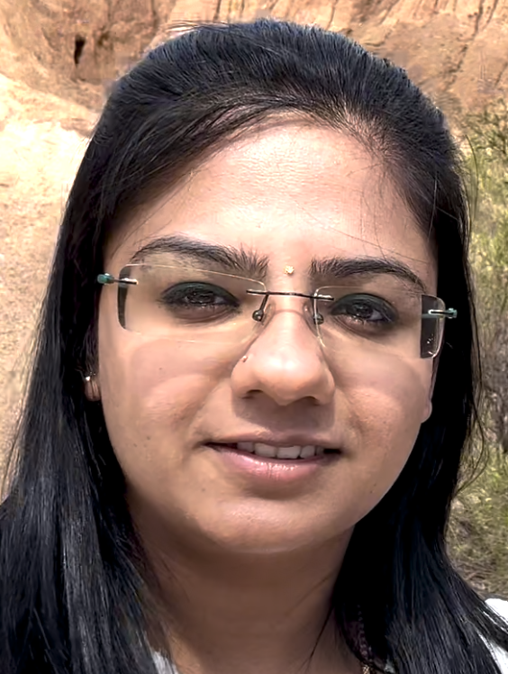

Dedicated to patient-centred, evidence-based nutritional care across hospital and community settings.
Compassionate Clinical Dietitian with experience in medical nutrition therapy, food service management, and therapeutic meal planning across nephrology, cardiology, oncology, and paediatrics. Strong skills in patient education, case analysis, and team collaboration.
M.Sc. Food Science & Community Nutrition — Manonmaniam Sundaranar University (2020, 79%)
B.Sc. Nutrition and Dietetics — Manonmaniam Sundaranar University (2018, 84%)
Clinical Dietitian – GEM Hospital (May 2023 – Jul 2024)
Intern Dietitian – Madras Medical Mission (Jul 2021 – Dec 2021)
vijayashree1127@gmail.com
+61 452 038 170
Clayton, Victoria 3168